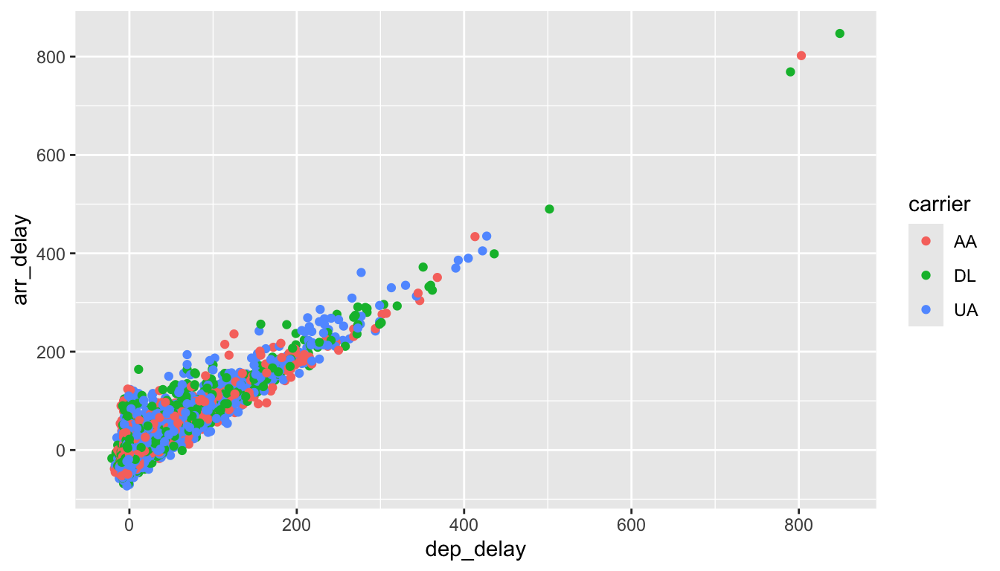

library(tidyverse)
library(openintro)Introduction to data
Some define statistics as the field that focuses on turning information into knowledge. The first step in that process is to summarize and describe the raw information – the data. In this lab we explore flights, specifically a random sample of domestic flights that departed from the three major New York City airports in 2013. We will generate simple graphical and numerical summaries of data on these flights and explore delay times. Since this is a large data set, along the way you’ll also learn the indispensable skills of data processing and subsetting.
Getting started
Load packages
In this lab, we will explore and visualize the data using the tidyverse suite of packages. The data can be found in the companion package for OpenIntro labs, openintro.
Let’s load the packages.
Creating a reproducible lab report
Remember that we will be using R Markdown to create reproducible lab reports. In RStudio, go to New File -> R Markdown… Then, choose From Template and then choose Lab Report for OpenIntro Statistics Labs from the list of templates.
See the following video describing how to get started with creating these reports for this lab, and all future labs:
The data
The Bureau of Transportation Statistics (BTS) is a statistical agency that is a part of the Research and Innovative Technology Administration (RITA). As its name implies, BTS collects and makes transportation data available, such as the flights data we will be working with in this lab.
First, we’ll view the nycflights data frame. Type the following in your console to load the data:
data(nycflights)The data set nycflights that shows up in your workspace is a data matrix, with each row representing an observation and each column representing a variable. R calls this data format a data frame, which is a term that will be used throughout the labs. For this data set, each observation is a single flight.
To view the names of the variables, type the command
names(nycflights)This returns the names of the variables in this data frame. The codebook (description of the variables) can be accessed by pulling up the help file:
?nycflightsOne of the variables refers to the carrier (i.e. airline) of the flight, which is coded according to the following system.
carrier: Two letter carrier abbreviation.9E: Endeavor Air Inc.AA: American Airlines Inc.AS: Alaska Airlines Inc.B6: JetBlue AirwaysDL: Delta Air Lines Inc.EV: ExpressJet Airlines Inc.F9: Frontier Airlines Inc.FL: AirTran Airways CorporationHA: Hawaiian Airlines Inc.MQ: Envoy AirOO: SkyWest Airlines Inc.UA: United Air Lines Inc.US: US Airways Inc.VX: Virgin AmericaWN: Southwest Airlines Co.YV: Mesa Airlines Inc.
Remember that you can use glimpse to take a quick peek at your data to understand its contents better.
glimpse(nycflights)The nycflights data frame is a massive trove of information. Let’s think about some questions we might want to answer with these data:
- How delayed were flights that were headed to Los Angeles?
- How do departure delays vary by month?
- Which of the three major NYC airports has the best on time percentage for departing flights?
Analysis
Lab report
To record your analysis in a reproducible format, you can adapt the general Lab Report template from the openintro package. Watch the video above to learn how.
Departure delays
Let’s start by examining the distribution of departure delays of all flights with a histogram.
ggplot(data = nycflights, aes(x = dep_delay)) +
geom_histogram()This function says to plot the dep_delay variable from the nycflights data frame on the x-axis. It also defines a geom (short for geometric object), which describes the type of plot you will produce.
Histograms are generally a very good way to see the shape of a single distribution of numerical data, but that shape can change depending on how the data is split between the different bins. You can easily define the binwidth you want to use:
ggplot(data = nycflights, aes(x = dep_delay)) +
geom_histogram(binwidth = 15)ggplot(data = nycflights, aes(x = dep_delay)) +
geom_histogram(binwidth = 150)- Look carefully at these three histograms. How do they compare? Are features revealed in one that are obscured in another?
If you want to visualize only delays of flights headed to Los Angeles, you need to first filter the data for flights with that destination (dest == "LAX") and then make a histogram of the departure delays of only those flights.
lax_flights <- nycflights %>%
filter(dest == "LAX")
ggplot(data = lax_flights, aes(x = dep_delay)) +
geom_histogram()Let’s decipher these two commands (OK, so it might look like four lines, but the first two physical lines of code are actually part of the same command. It’s common to add a break to a new line after %>% to help readability).
Command 1: Take the
nycflightsdata frame,filterfor flights headed to LAX, and save the result as a new data frame calledlax_flights.==means “if it’s equal to”.LAXis in quotation marks since it is a character string.
Command 2: Basically the same
ggplotcall from earlier for making a histogram, except that it uses the smaller data frame for flights headed to LAX instead of all flights.
Logical operators: Filtering for certain observations (e.g. flights from a particular airport) is often of interest in data frames where we might want to examine observations with certain characteristics separately from the rest of the data. To do so, you can use the filter function and a series of logical operators. The most commonly used logical operators for data analysis are as follows:
==means “equal to”!=means “not equal to”>or<means “greater than” or “less than”>=or<=means “greater than or equal to” or “less than or equal to”
You can also obtain numerical summaries for these flights:
lax_flights %>%
summarise(mean_dd = mean(dep_delay),
median_dd = median(dep_delay),
n = n())Note that in the summarise function you created a list of three different numerical summaries that you were interested in. The names of these elements are user defined, like mean_dd, median_dd, n, and you can customize these names as you like (just don’t use spaces in your names). Calculating these summary statistics also requires that you know the function calls. Note that n() reports the sample size.
Summary statistics: Some useful function calls for summary statistics for a single numerical variable are as follows:
meanmediansdvarIQRminmax
Note that each of these functions takes a single vector as an argument and returns a single value.
You can also filter based on multiple criteria. Suppose you are interested in flights headed to San Francisco (SFO) in February:
sfo_feb_flights <- nycflights %>%
filter(dest == "SFO", month == 2)Note that you can separate the conditions using commas if you want flights that are both headed to SFO and in February. If you are interested in either flights headed to SFO or in February, you can use the | instead of the comma.
Create a new data frame that includes flights headed to SFO in February, and save this data frame as
sfo_feb_flights. How many flights meet these criteria?Describe the distribution of the arrival delays of these flights using a histogram and appropriate summary statistics. Hint: The summary statistics you use should depend on the shape of the distribution.
Another useful technique is quickly calculating summary statistics for various groups in your data frame. For example, we can modify the above command using the group_by function to get the same summary stats for each origin airport:
sfo_feb_flights %>%
group_by(origin) %>%
summarise(median_dd = median(dep_delay), iqr_dd = IQR(dep_delay), n_flights = n())Here, we first grouped the data by origin and then calculated the summary statistics.
- Calculate the median and interquartile range for
arr_delays of flights in in thesfo_feb_flightsdata frame, grouped by carrier. Which carrier has the most variable arrival delays?
Departure delays by month
Which month would you expect to have the highest average delay departing from an NYC airport?
Let’s think about how you could answer this question:
First, calculate monthly averages for departure delays. With the new language you are learning, you could
group_bymonths, thensummarisemean departure delays.
Then, you could to
arrangethese average delays indescending order.
nycflights %>%
group_by(month) %>%
summarise(mean_dd = mean(dep_delay)) %>%
arrange(desc(mean_dd))- Suppose you really dislike departure delays and you want to schedule your travel in a month that minimizes your potential departure delay leaving NYC. One option is to choose the month with the lowest mean departure delay. Another option is to choose the month with the lowest median departure delay. What are the pros and cons of these two choices?
On time departure rate for NYC airports
Suppose you will be flying out of NYC and want to know which of the three major NYC airports has the best on time departure rate of departing flights. Also supposed that for you, a flight that is delayed for less than 5 minutes is basically “on time”. You consider any flight delayed for 5 minutes of more to be “delayed”.
In order to determine which airport has the best on time departure rate, you can
- first classify each flight as “on time” or “delayed”,
- then group flights by origin airport,
- then calculate on time departure rates for each origin airport,
- and finally arrange the airports in descending order for on time departure percentage.
Let’s start with classifying each flight as “on time” or “delayed” by creating a new variable with the mutate function.
nycflights <- nycflights %>%
mutate(dep_type = ifelse(dep_delay < 5, "on time", "delayed"))The first argument in the mutate function is the name of the new variable we want to create, in this case dep_type. Then if dep_delay < 5, we classify the flight as "on time" and "delayed" if not, i.e. if the flight is delayed for 5 or more minutes.
Note that we are also overwriting the nycflights data frame with the new version of this data frame that includes the new dep_type variable.
We can handle all of the remaining steps in one code chunk:
nycflights %>%
group_by(origin) %>%
summarise(ot_dep_rate = sum(dep_type == "on time") / n()) %>%
arrange(desc(ot_dep_rate))- If you were selecting an airport simply based on on time departure percentage, which NYC airport would you choose to fly out of?
You can also visualize the distribution of on-time departure rate across the three airports using a segmented bar plot.
ggplot(data = nycflights, aes(x = origin, fill = dep_type)) +
geom_bar()More Practice
Mutate the data frame so that it includes a new variable that contains the average speed,
avg_speedtraveled by the plane for each flight (in mph). Hint: Average speed can be calculated as distance divided by number of hours of travel, and note thatair_timeis given in minutes.Make a scatterplot of
avg_speedvs.distance. Describe the relationship between average speed and distance. Hint: Usegeom_point().Replicate the following plot. Hint: The data frame plotted only contains flights from American Airlines, Delta Airlines, and United Airlines, and the points are
colored bycarrier. Once you replicate the plot, determine (roughly) what the cutoff point is for departure delays where you can still expect to get to your destination on time.


This work is licensed under a Creative Commons Attribution-ShareAlike 4.0 International License.